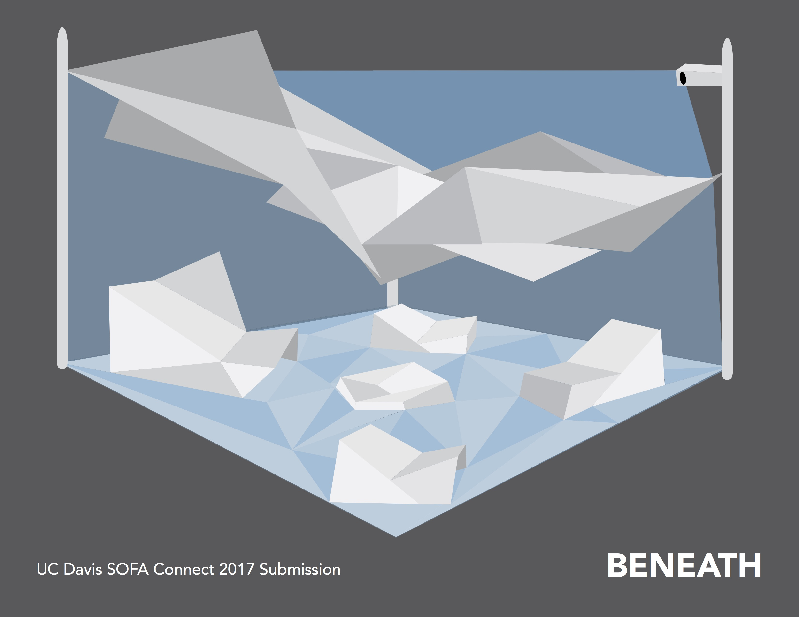
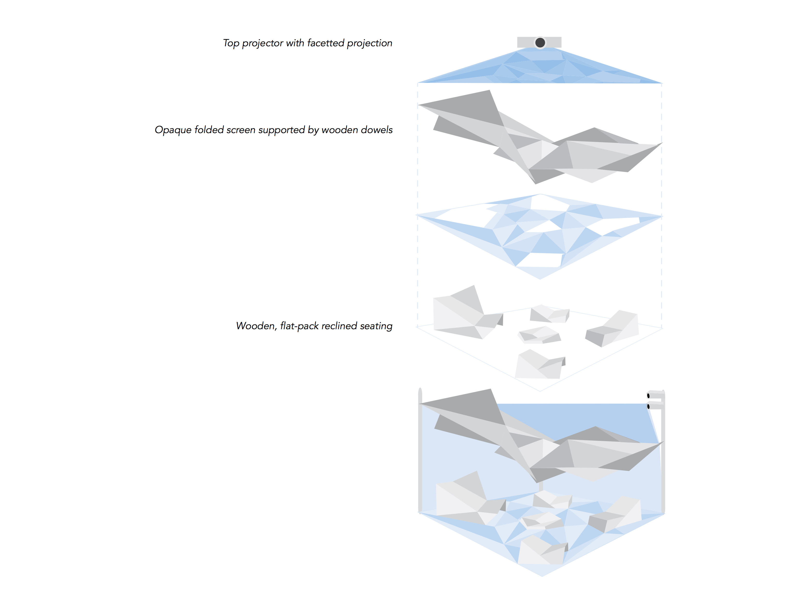
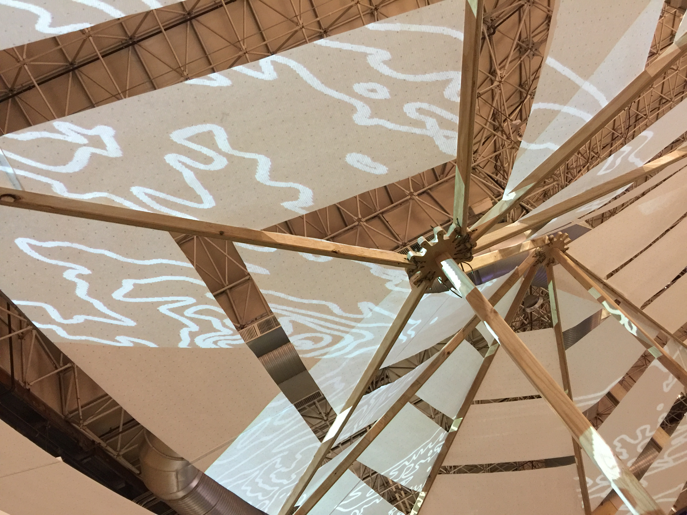
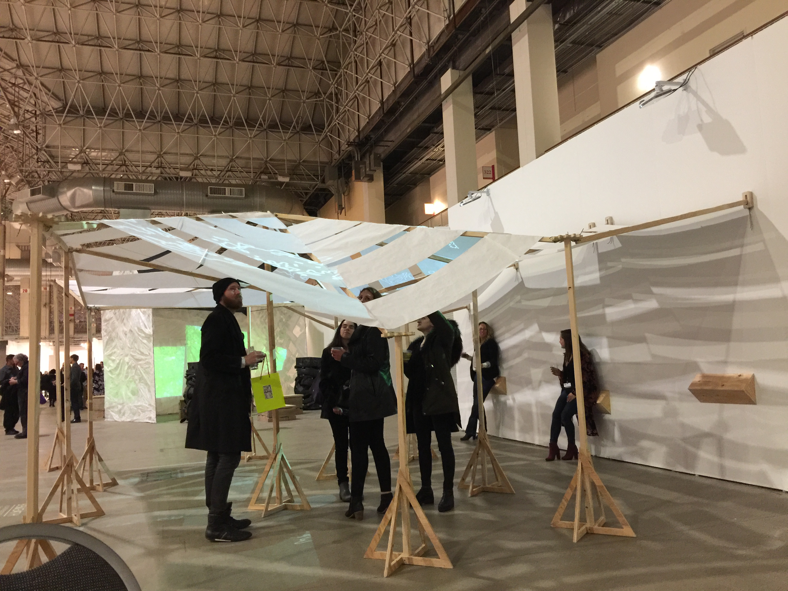

ZHAOHUI ZHAO
INTERACTIVE SCULPTURE
This project was among the six final contestants for “connect - SOFA Chicago,” SOFA stands for Sculpture Objects Functional Art and Design.
{kind=link}
It aims to convey and visualized the land subsidence, caused by the weight cities and industries combined with over extraction of natural resources from sedimentary deposits, happening in Centra California and raise awareness.
Our proposal, in short, is a wooden structure with half-transparent papers resembling the terrain and a projection projected on top of the structure. 
{kind=link}
My role in the team is designing the projection.
The first thing that came into my mind was that it should accentuate the sinking and falling of the ground from the viewer's point, and to achieve that, we utilized visual perspective, and it should also, combined with the structure, convey that it is the ground that is of the subject. So we ended up with a projection generated by the Processing language: using the topographical contour of the area of subsidence, we created an animation that is imposing, signifying the sinking of the land.  
{kind=link}
{kind=link}